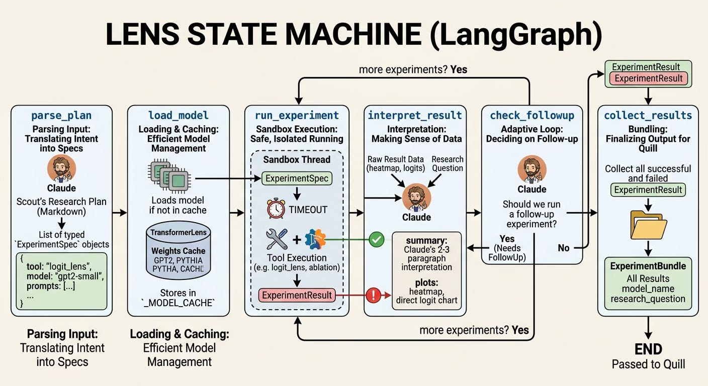

Part 4 of Building Seesaw: Agentic AI for AI Safety Research
Building Seesaw: Agentic AI to do AI Safety Research, Part 4.
A deep-dive into the technical design of Lens the execution agent
If you’re new to this series, welcome!
In the last post, I introduced Seesaw, which is a multi-agent system for mechanistic interpretability research and its core architecture powered by 3 unique agents: Scout, Lens, and Quill. Scout plans the research. Lens runs it. Quill reviews and critiques it. This post is about Lens in depth. I am covering Lens first since it is the most interesting part of the system and the one primarily responsible for the execution of the safety research experiments.
What Lens Has to Do
Lens receives a Research Plan from Scout in the form of a structured markdown document containing a list of experiments, each specifying a tool, a model, prompts, and a hypothesis. Lens has to:
Parse that plan into runnable experiment specs
Load the right model (without reloading it on every experiment)
Execute each experiment, catching failures gracefully
Interpret the results in context of the research question
Decide if the result warrants an immediate follow-up
Bundle everything for Quill
That’s five distinct concerns, and mixing them in a single script would be a mess. So Lens is a LangGraph state machine each concern becomes a node, and the graph controls the flow.
The Graph

The workflow contains six nodes in total. The loop between check_followup and run_experiment is where the system can dynamically extend the experiment queue. Let’s walk through each node:
Node 1: parse_plan: Translating Intent into Specs
Scout writes its Research Plan in structured markdown, so Lens’ first job is to translate the markdown into an experimental plan. parse_plan sends the whole Research Plan to Claude with a structured output schema and asks it to extract every experiment into a typed ExperimentSpec, which is as follows:
@dataclass
class ExperimentSpec:
name: str
tool: str
model_name: str
prompts: list[str]
what_to_measure: str
hypothesis_tested: str
expected_outcome: str
tool_kwargs: dict # e.g. io_tokens, subject_tokens for IOI
This is a clean boundary: everything before this node is unstructured text, everything after is typed data. If Scout was vague about prompts, Claude generates appropriate ones. If an experiment specifies a tool that doesn’t exist in the registry, it gets filtered out here rather than exploding later.
Node 2: load_model: The Cache Layer
Transformer models are not cheap to load. While initial experiments are done with GPT-2 Small larger models of real consequence would take much longer. Running five experiments and reloading the weights five times would be wasteful and painful to debug. model_session.py keeps a simple in-process cache:
_MODEL_CACHE: dict[str, HookedTransformer] = {}
def get_model(model_name: str) -> HookedTransformer:
if model_name not in _MODEL_CACHE:
model = HookedTransformer.from_pretrained(
model_name,
center_writing_weights=True,
center_unembed=True,
fold_ln=True,
refactor_factored_attn_matrices=True,
)
model.eval()
_MODEL_CACHE[model_name] = model
return _MODEL_CACHE[model_name]
One subtle thing worth noting: use_attn_result is intentionally absent. The flag conflicts with refactor_factored_attn_matrices, so tools that need per-head output compute it manually via cache["z", layer] @ model.W_O[layer].
Node 3: run_experiment: The Sandbox
This is where TransformerLens actually runs. run_experiment pops the first spec off the queue, looks up the tool function in a registry, and calls it. But there’s a wrapper around every tool call i.e the sandbox. This version has a super simple “sandbox” which is, in all honestly not a sandbox at all but just an isolated thread. This is likely to become a lot more sophisticated with the models and experiments improving.
def run_in_sandbox(tool_fn, tool_kwargs, experiment_name, timeout) -> ExperimentResult:
with concurrent.futures.ThreadPoolExecutor(max_workers=1) as executor:
future = executor.submit(tool_fn, **tool_kwargs)
try:
return future.result(timeout=timeout)
except concurrent.futures.TimeoutError:
return ExperimentResult(..., status="timeout")
except Exception as e:
return ExperimentResult(..., status="failed", error=str(e))
Every experiment runs in an isolated thread with a hard timeout. If an experiment crashes due to bad prompts, OOM, a numerical edge case in a hook; the workflow keeps running. The failed result gets logged and bundled; Quill sees it and can comment on it. The system doesn’t stop. This is quite beneficial especially in early testing, where several “mutually exclusive” experiments would fail for some reason. Without the sandbox, a single bad experiment would kill the entire run.
Node 4: interpret_result: Reading the Numbers
Raw experiment output is data: a tensor of logit differences, a heatmap matrix, a list of top heads. This needs to be translated into natural language so the result is supplemented with interpretations in natural language.
After each experiment, interpret_result sends the raw data (truncated to 2,000 characters) back to Claude with a specific prompt:
Interpret this experiment result in 2-3 paragraphs: 1. What do the results reveal about the model’s internal mechanisms? 2. What is the most important finding? 3. How does this connect to the research question?
The result gets a summary field populated with Claude’s interpretation. This becomes the input to the next node.
Node 5: check_followup: Adaptive Experiments
This is the most interesting node. After interpreting a result, Lens asks: does this finding warrant an immediate follow-up?
Claude responds with a structured FollowUpDecision:
class FollowUpDecision(BaseModel):
needs_followup: bool
reason: str
followup_tool: str | None
followup_prompts: list[str]
followup_description: str | None
followup_kwargs: dict
If needs_followup is true, a new experiment spec gets prepended to the front of the queue before the remaining planned experiments. The system is told to be conservative: only add a follow-up if the result reveals something that a differenttool can directly test, and only up to MAX_FOLLOWUPS times total.
This is the mechanism that makes Lens adaptive rather than just a dumb executor. If an experiments reveals that a feature/neuron is unusually important, Lens can immediately queue an attention pattern analysis on that specific head rather than waiting until after all other experiments complete. In practice, it fires maybe 20-30% of the time. When it does, it tends to be genuinely useful.
Node 6: collect_results: Bundling for Quill
The final node assembles all results into an ExperimentBundle:
@dataclass
class ExperimentBundle:
research_question: str
model_name: str
results: list[ExperimentResult]
@property
def successful(self) -> list[ExperimentResult]:
return [r for r in self.results if r.status == "success"]
@property
def failed(self) -> list[ExperimentResult]:
return [r for r in self.results if r.status != "success"]
The bundle serializes to JSON and gets passed to Quill. The successful and failed properties let Quill give an honest accounting of what worked and what didn’t.
The Five Tools
Lens has five TransformerLens-based tools, each answering a different question about a model’s internals:
logit_lens:Where across layers does the model “commit” to the answerattention_pattern:Which tokens are each head attending to?ablation:Which heads are causally necessary for the behaviouractivation_patching:Which layer × position carries the critical information?direct_logit_attribution:How much does each component contribute to the final logit?
For more details on each of these tools and what they do, refer to this excellent source on mechanistic interpretability techniques.
Output
Each ExperimentResult carries three things that matter for Quill:
summary: Claude’s natural language interpretationplot_paths: paths to saved matplotlib heatmapsdata: the raw numbers (logit diffs, top heads, recovery scores)
Quill reads this summary The raw data is the ground truth.
Next Steps
Lens v0 has the five core diagnostic tools working: logit lens, attention patterns, activation patching, ablation, and direct logit attribution. The next version will add the interventional tools: activation steering and SAE feature steering. The distinction matters because diagnostic tools tell you what a circuit does, but steering lets you verify it causally and start editing model behaviour rather than just observing it.
Beyond the tools, the bigger piece of work is wiring the full pipeline together. Scout, Lens, and Quill exist as individual agents but the orchestrator that chains them research question in, critique report out is what I will tackle right after this. The next post will cover that end-to-end run: what it looks like when Scout hands a research plan to Lens, Lens hands results to Quill, and a researcher only has to approve two checkpoints in between. Before that, I will have a short post on a lit survey update. Stay tuned!
Originally published on Mind & AI on Substack.